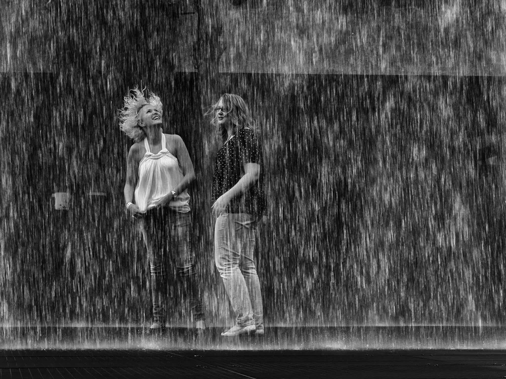

일요일도 찜통더위…중부·경북엔 소나기, 열대야 이어져
일요일인 26일에도 전국 대부분 지역에 폭염특보가 발효된 가운데 무더위가 이어지고 있다. 기상청에 따르면 이날 전국 대부분 지역의 체감온도는 33도 안팎까지 오르고, 남부지방은 35도 안팎으로 예상돼 그야말로 숨이 턱턱 막히는 더위가 계속될 전망이다. 여기에 일부 지역에는 소나기까지 예보돼 무덥고 습한 날씨가 주말 나들이객들의 발목을 잡을 것으로 보인다.
실제 이날 낮 최고기온은 지역별로 큰 차이를 보였다. 서울은 33도, 인천은 32도, 수원은 33도까지 오를 것으로 예보됐고, 강원 산간인 춘천과 강릉은 상대적으로 낮은 30도 안팎을 기록할 전망이다. 반면 남부지방은 한층 더 뜨거운 날씨를 보이는데, 청주 34도, 대전 33도, 전주 34도, 광주 35도에 이어 대구는 무려 37도까지 치솟을 것으로 예상된다. 부산과 제주도 각각 34도 안팎으로 무더운 하루가 될 전망이다. 특히 대구는 이날 전국에서 가장 높은 기온을 기록할 것으로 보여, 내륙 분지 특유의 무더위가 다시 한번 확인될 것으로 보인다.

이 같은 폭염 속에서도 이날은 중부지방을 중심으로 비 소식이 예고돼 있다. 기상청은 서울·인천·경기와 서해5도, 강원도에 10~50㎜의 비가 내릴 것으로 내다봤고, 충북 역시 10~50㎜의 강수량이 예상된다. 대전·세종·충남에는 5~40㎜, 대구·경북 지역에는 10~50㎜의 비가 예보돼 있다. 다만 이번 비가 무더위를 식혀주기보다는 오히려 습도를 끌어올려 체감온도를 더 높일 수 있다는 우려도 나온다. 대기 중 수증기량이 늘어난 상태에서 소나기가 지나가면 오히려 후텁지근함이 가중될 수 있어, 주말 야외활동을 계획한 시민들의 주의가 요구된다.
밤사이에도 더위가 좀처럼 꺾이지 않으면서 전국 대부분 지역에서 열대야 현상이 계속되고 있다. 기상청에 따르면 이날 밤에도 전국 대부분 지역의 최저기온이 25도 이상을 유지할 것으로 예상돼, 에어컨 없이는 잠들기 힘든 밤이 이어질 전망이다. 열대야가 장기화하면서 수면의 질 저하를 호소하는 시민들도 늘고 있으며, 냉방기기 사용량 증가에 따른 전력 수요도 함께 늘어나는 추세다. 주말 내내 이어진 무더위로 피로가 누적된 상태에서 다시 한 주를 시작해야 하는 직장인들의 체감 피로도 한층 커질 것으로 보인다.

이번 무더위는 한반도 주변을 덮은 고기압이 쉽사리 물러나지 않는 가운데, 남쪽에서 유입되는 고온다습한 공기가 겹치면서 나타나는 현상으로 분석된다. 기상청은 당분간 이러한 무더위 패턴이 이어질 가능성이 크다고 보고 있으며, 중부지방의 소나기 역시 더위를 근본적으로 해소하기보다는 일시적인 현상에 그칠 것으로 내다봤다.
당국은 폭염특보가 이어지는 동안 한낮 야외활동을 가급적 자제하고, 충분한 수분 섭취와 휴식을 취해달라고 당부했다. 특히 열대야가 길어질수록 피로가 누적돼 온열질환 위험이 커질 수 있는 만큼, 무더위가 한풀 꺾일 때까지 각 가정과 일터에서 건강 관리에 각별히 신경 써야 한다는 조언이 이어지고 있다. 소나기가 예보된 지역에서는 갑작스러운 강수에 따른 도로 사정 변화에도 유의할 필요가 있다. 기상당국은 다음 주에도 이 같은 무더위와 열대야 패턴이 크게 달라지지 않을 것으로 내다보고 있어, 당분간 폭염 대비 태세를 늦추기 어려운 상황이다.